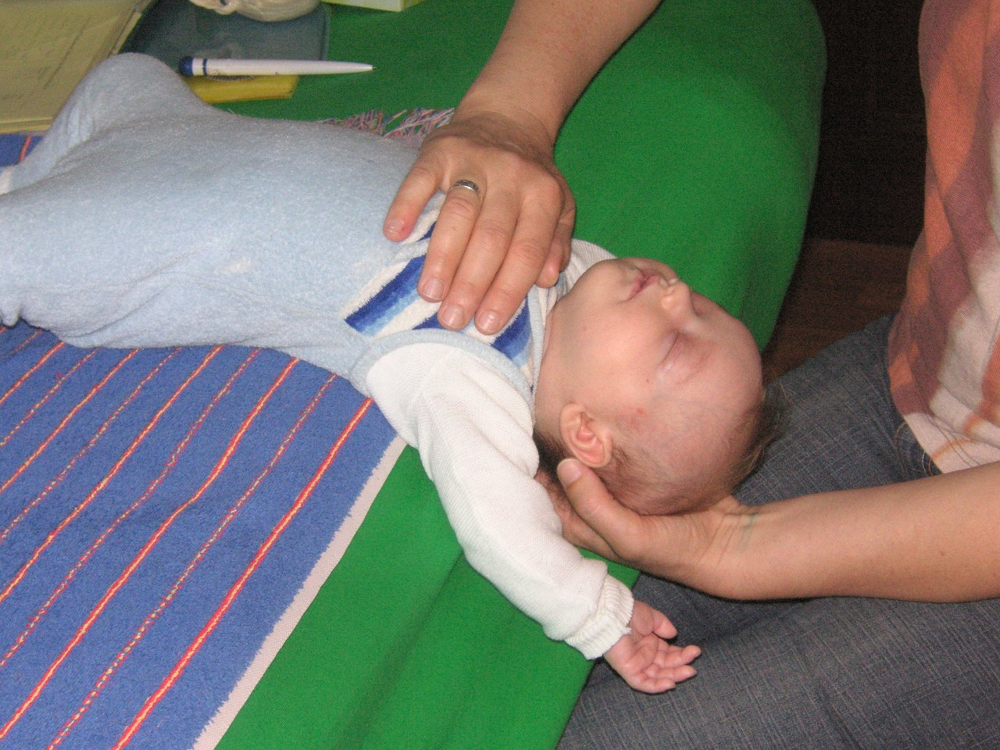

Ein Ort, an dem Heilung Raum bekommt
Ich freue mich, Sie in meiner Praxis zu begrüssen. Ich behandle Babys, Kinder, Frauen und Männer – sanft, achtsam und auf Sie abgestimmt.
Krankenkassen anerkannt

Sanft, aber wirkungsvoll
Craniosacral-Therapie ist eine sanfte Behandlungsform. Viele Spannungszustände lassen sich damit lindern – zum Beispiel körperliche und emotionale Belastungen bei Stress, nach Unfall, Operationen und Krankheiten.
Auch in der Schwangerschaft und nach der Geburt ist Cranio hilfreich – für die Mutter wie für das Baby.
Behandlungen & Begleitung
Ich behandle Babys, Kinder, Frauen und Männer.
-
Craniosacral-Therapie
Für alle von Jung bis Alt – sanfte Lösung von Spannungen.
-
Fussreflexzonen & Bachblüten
Eine angenehme Massage setzt wichtige Impulse zur Lösung von Spannungen und unterstützt die Selbstheilungskräfte – hormonell und physisch. Bachblüten helfen bei Stress für Gross und Klein.
-
Geburtsverarbeitung
Begleitung nach schwierig erlebten oder traumatischen Geburten. Als Gründerin des Netzwerks Verarbeitung Geburt und Autorin von vier Büchern begleite ich Frauen, Babys und auch Väter einfühlsam beim Aufarbeiten des Erlebten.
-
Akupunktur in der Schwangerschaft
Unterstützung in der Schwangerschaft mit feiner Akupunktur.
-
Bindungsförderung & -heilung
Mit Babys und grösseren Kindern – mit Gesprächen und liebevollen, bindungsfördernden Elementen wie dem Bindungsbad (Babyheilbad).
-
Wochenbettbetreuung
Ich betreue Sie gerne während der Schwangerschaft und im Wochenbett.
-
Babyheilbad
Durchführung des Baby-Heilbads – bei Ihnen zu Hause oder in der Praxis. Mehr erfahren →
-
Zoom-Sitzung
Fernberatung per Zoom ist möglich – bequem von zu Hause aus.
Adresse & Anfahrt
8404 Winterthur
Einen Termin vereinbaren
Rufen Sie mich an – gemeinsam finden wir den passenden Weg für Sie und Ihr Kind.